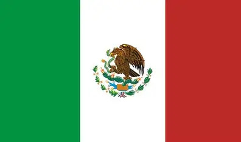
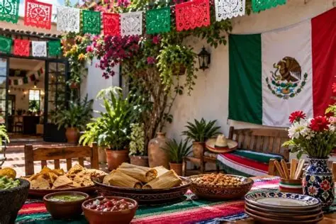
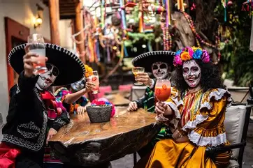
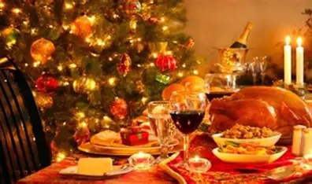

Las fiestas patrias de septiembre conmemoran la Independencia de México. El momento principal es la noche del 15 de septiembre, cuando se recuerda el inicio de la lucha independentista de 1810 con el tradicional Grito de Independencia. El 16 de septiembre se celebra el Día de la Independencia con desfiles, ceremonias, música, comida tradicional y actividades culturales en todo el país.
Durante septiembre, las calles y plazas de México se llenan de banderas, adornos tricolores y actividades culturales. También es común disfrutar de platillos tradicionales como pozole, tamales, tacos y chiles en nogada. Estas celebraciones fortalecen el sentido de identidad, orgullo y unidad entre los mexicanos.

El Día de Muertos, celebrado principalmente el 1 y 2 de noviembre, es una tradición mexicana dedicada a recordar y honrar a los seres queridos fallecidos. Las familias colocan ofrendas y altares con fotografías, flores de cempasúchil, velas, comida y objetos que pertenecían a los difuntos. Es una celebración que combina tradiciones indígenas y elementos del catolicismo y representa la relación cultural de México con la muerte y la memoria.
Durante esta celebración, las familias visitan los cementerios para limpiar y decorar las tumbas de sus seres queridos. Las flores de cempasúchil, las veladoras, el papel picado y las calaveras de azúcar son algunos de sus elementos más representativos. Es una tradición que busca mantener vivo el recuerdo de quienes han fallecido y transmitir estas costumbres a las nuevas generaciones.

Las fiestas mexicanas de diciembre están principalmente relacionadas con la Navidad y las tradiciones religiosas y familiares. Una de las celebraciones más importantes son las posadas, que se realizan del 16 al 24 de diciembre y representan el recorrido de José y María antes del nacimiento de Jesús. Durante estas fechas se reúnen familiares y amigos, se cantan villancicos, se rompen piñatas y se disfrutan alimentos y bebidas tradicionales.
El 24 de diciembre, conocido como Nochebuena, las familias suelen reunirse para compartir una cena y celebrar el nacimiento de Jesús. El 25 de diciembre, Navidad, continúa la convivencia familiar y el intercambio de regalos. También se acostumbra preparar platillos como tamales, pozole, ponche, buñuelos y bacalao, haciendo de diciembre una época de unión, celebración y preservación de las tradiciones mexicanas.